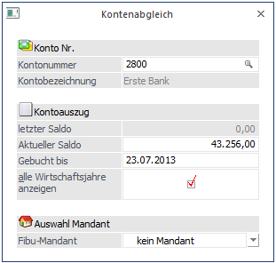
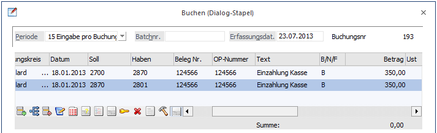
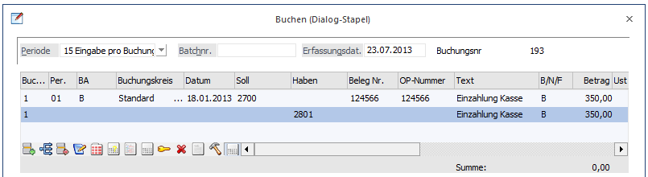
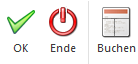

Mit der Funktion Kontenabgleich sind Sie in der Lage, alle Journalzeilen eines bestimmten Kontos mit den Zeilen Ihres Bankauszuges abzugleichen.
Diese Funktion wird im Menüpunkt
1 Buchen
1 Kontenabgleich
aufgerufen.
Als erstes muss festgelegt werden, bei welchen Konten der Kontenabgleich vorgenommen werden soll. Dies geschieht im Menüpunkt
1 Stammdaten
1 Konten
1 Sachkonten
indem bei den entsprechenden Konten die Checkbox "Zahlungsmittelkonto" aktiviert wird.
Danach wählen Sie den Menüpunkt Buchen/Kontenabgleich an. Hier geben Sie die Kontonummer des Kontos an, das abgeglichen werden soll, ein. Durch Drücken der F9-Taste kann nach allen Zahlungsmittelkonten gesucht werden.

Danach können folgende Eingabefelder bearbeitet werden.
Ø Letzter Saldo
Hier wird der letzte Saldo vom letzten Kontenabgleich vorgeschlagen und kann überschrieben werden.
Ø Aktueller Saldo
Hier tragen Sie den Endsaldo des Bankauszuges ein, mit dem Sie Ihre Buchungsdaten vergleichen wollen und im Feld gebucht bis das Valutadatum des Bankauszuges, bis zu dem die Buchungen berücksichtigt sind.
Ø Gebucht bis
Eingabe des Datums, bis zu welchem Buchungen zum Abgleich vorgeschlagen werden sollen.
Ø alle Wirtschaftsjahre anzeigen
Bei aktivierter Checkbox werden die nicht markierten Journalzeilen aller Wirtschaftsjahre des Mandanten angezeigt. Bei zusätzlicher Auswahl eines weiteren Mandanten werden auch von diesem alle nicht markierten Zeilen verwendet.
Ø FIBU-Mandant
Aus der Auswahllistbox kann ein Mandant ausgewählt werden, dessen Buchungszeilen ebenfalls in die Tabelle übernommen werden sollen.
Nach Bestätigen des OK-Buttons werden alle Buchungszeilen des selektierten Kontos angezeigt. Checken Sie jede Buchungszeile, die Sie auf dem Bankauszug wiederfinden durch Aktivieren der Checkbox in der Bearbeitungstabelle.
Im Kopfteil des Bildschirms sehen Sie die aktuellen Werte, die sich nach jeder gekennzeichneten Buchungszeile entsprechend verändern.
Sind alle Zeilen abgeglichen, müsste das Feld Differenz auf Null stehen. Ist dies nicht der Fall, befinden sich entweder Zeilen im Bankbeleg, die noch nicht gebucht sind (in diesem Fall wechseln Sie durch Anklicken des Buttons Buchen direkt in die Buchungserfassung der WinLine, um die fehlende Journalzeile nachzutragen), oder Sie haben Journalzeilen in Ihrer Buchhaltung, die nicht dem Bankauszug entsprechen. Im letzteren Fall sollten Sie überprüfen, wodurch es zu dieser Differenz kommen konnte.
Hinweis
Bei Buchungen zweier Zahlungsmittelkonten (z.B. Kasse an Bank), die beide über den Kontenabgleich abgeglichen werden sollen, ist eine andere Vorgehensweise notwendig. Folgende Möglichkeiten bestehen:
Buchung über Umbuchungskonto:
Es wird ein weiteres Konto als Umbuchungskonto (Kontotyp 0 = Sachkonto) verwendet.
Buchungsbeispiel:
Kasse an Umbuchungskonto
Umbuchungskonto an Bank

Buchung als Split-Buchung
Diese Buchung kann im Buchen / Dialog - Stapel bzw. Buchen / Splitbuchung als zweizeilige Buchung erfasst werden.
Buchungsbeispiel:
Kasse
an Bank

Buttons

Ø OK
Nach Bestätigung des OK-Buttons oder mit F5 wechseln Sie in die Kontenabgleich-Selektion.
Ø Ende
Durch Anklicken des Ende-Buttons bzw. durch Drücken der ESC-Taste wird das Fenster geschlossen. Nicht gespeicherte Änderungen gehen verloren.
Ø Buchen
Über den Buchen-Button gelangen Sie direkt in das Buchen Dialog-Stapel, um fehlende Buchungen zu erfassen. Nach dem Beenden des Buchen Dialog-Stapel befinden Sie sich wieder in dem Fenster Kontenabgleich.